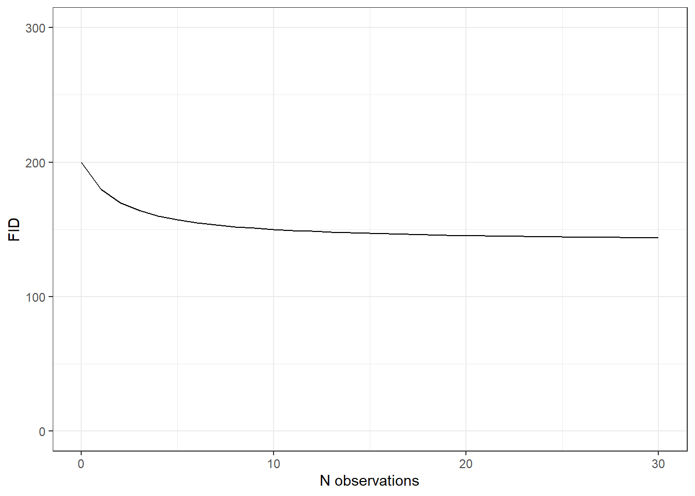
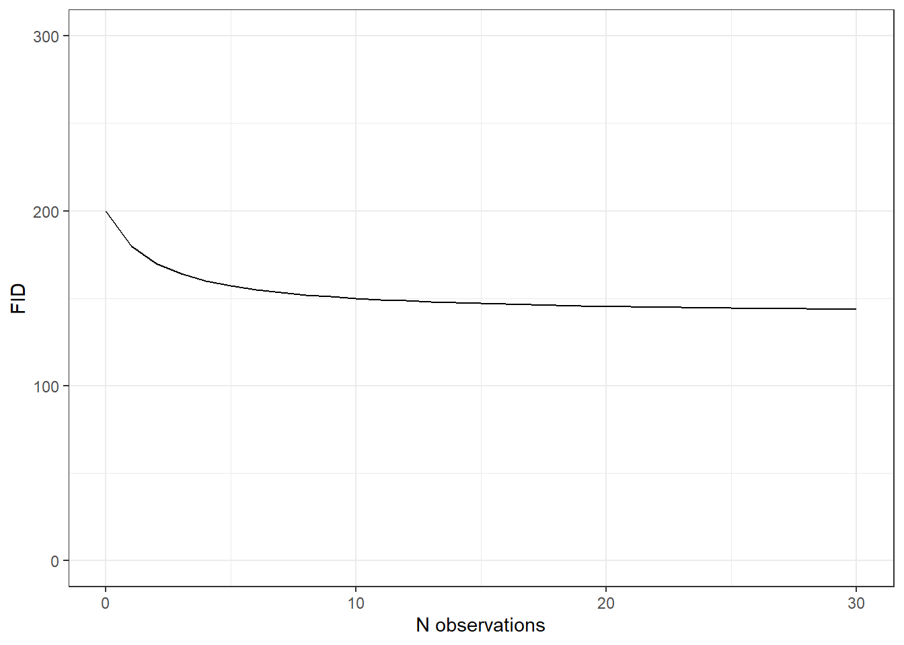
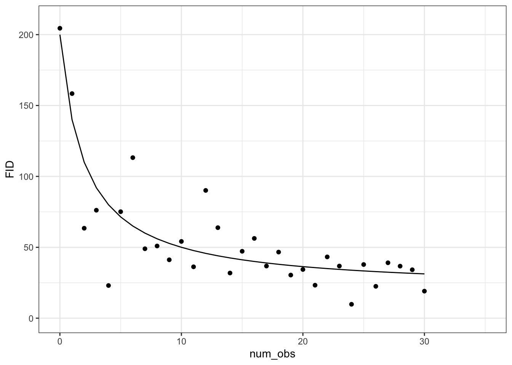
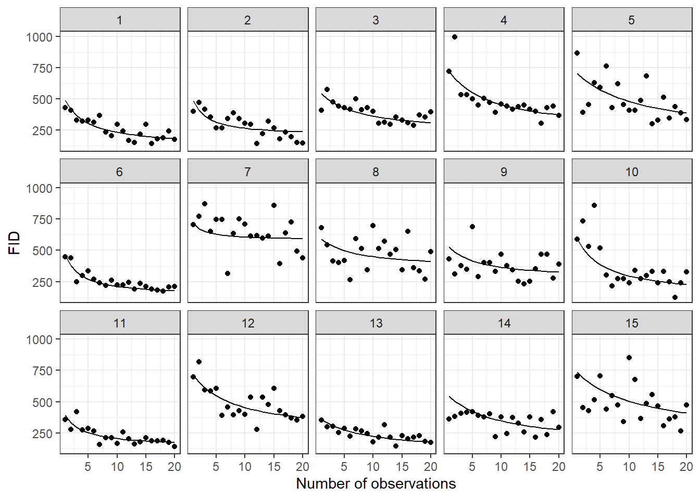
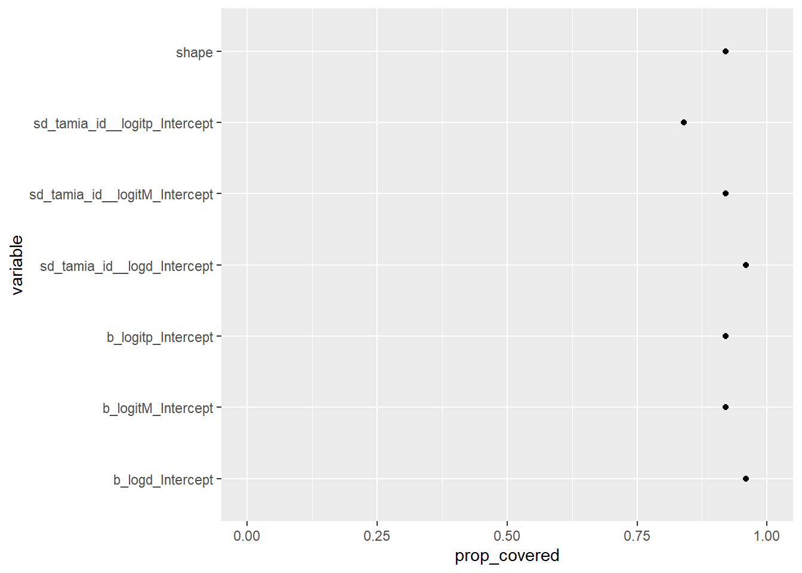

tar_load(one_curve)
one_curve
Simulations to measure the performance of a nonlinear model of habituation
This document is created to validate the following model of Flight Initiation distance:
\[ \begin{align} \text{FID} &\sim \text{Gamma}(\alpha, \alpha/\mu) \\ \mu &\sim M \times 1000 \times \left(1 - \frac{p \times X}{d + X} \right) \\ \text{logit}(M) &= M_0 + \beta_{M, i}\\ \text{logit}(p) &= p_0 + \beta_{p, i}\\ \text{log}(d) &= d_0 + \beta_{d, i}\\ \begin{bmatrix} \beta_{M} \ \beta_{p} \ \beta_{d} \end{bmatrix} &\sim N\left(\begin{bmatrix} 0 \ 0 \ 0 \end{bmatrix}, \Sigma\right) \\ \Sigma &= \text{diag}(\sigma_M, \sigma_p, \sigma_d) \times \text{R} \times \text{diag}(\sigma_M, \sigma_p, \sigma_d) \\ \sigma_M &\sim \text{Exponential}(4) \\ \sigma_p &\sim \text{Exponential}(2) \\ \sigma_d &\sim \text{Exponential}(2) \\ \text{R} &\sim \text{LKJ}(2) \\ M_0 &\sim N(0.5, 0.5)\\ p_0 &\sim N(-1, 0.2)\\ d_0 &\sim N(1.5, 0.5)\\ \alpha &\sim \text{Gamma}(6.25, .25) \end{align} \]
Begin by plotting the model’s curve:
tar_load(one_curve)
one_curve
tar_load(one_sim_plot)
one_sim_plot
define a model that matches the above in brms:
tar_read(model_bf)
#> FID ~ inv_logit(logitM) * 1000 * (1 - inv_logit(logitp) * num_obs/(exp(logd) + num_obs))
#> logitM ~ 1 + (1 | t | tamia_id)
#> logitp ~ 1 + (1 | t | tamia_id)
#> logd ~ 1 + (1 | t | tamia_id)and define priors that correspond to this model as well:
tar_read(model_priors)
#> prior class coef group resp dpar nlpar lb ub source
#> lkj(2) cor <NA> <NA> user
#> exponential(2) sd logd <NA> <NA> user
#> exponential(4) sd logitM <NA> <NA> user
#> exponential(2) sd logitp <NA> <NA> user
#> normal(1.5, 0.5) b logd <NA> <NA> user
#> normal(0.5, 0.5) b logitM <NA> <NA> user
#> normal(1, 0.5) b logitp <NA> <NA> user
#> gamma(6.25, 0.25) shape <NA> <NA> userstart to plot the prior predictive distribution
tar_load(model_prior_sim)
un_tamia <- tibble::tibble(tamia_id = "un_tamia",
num_obs = 1:20)
un_tamia_pred <- un_tamia |>
tidybayes::add_predicted_draws(model_prior_sim,
ndraws = 15,
seed = 1234)
un_tamia_expect <- un_tamia |>
tidybayes::add_epred_draws(model_prior_sim,
ndraws = 15,
seed = 1234)
un_tamia_expect |>
left_join(un_tamia_pred) |>
ggplot2::ggplot(ggplot2::aes(x = num_obs, y = .prediction)) +
ggplot2::geom_point() +
ggplot2::geom_line(aes(y = .epred)) +
ggplot2::facet_wrap(~.draw, ncol=5) +
labs(x = "Number of observations", y = "FID") +
theme_bw()
#> Joining with `by = join_by(tamia_id, num_obs, .row, .chain, .iteration, .draw)`
s
This is how the model predicts for just ONE animal. How does the model think about variation? In other words, what are the effects of the hyperpriors on individual variation in \(M\), \(d\) and \(p\)?
tar_load(prior_simulation_manytamia)
prior_sim_df <- prior_simulation_manytamia |>
add_rownames(var = "sim_id") |>
unnest(cols = simulated_data)
#> Warning: `add_rownames()` was deprecated in dplyr 1.0.0.
#> ℹ Please use `tibble::rownames_to_column()` instead.
prior_sim_df |>
ggplot(aes(x = num_obs,
y = epred,
group = tamia_id)) +
geom_line() +
facet_wrap(~draw_id, ncol = 5) +
# coord_cartesian(ylim = c(0, 1000)) +
# geom_hline(yintercept = 1000, lty = 2) +
theme_bw()
We fit the model described above to 25. Each simulation produced a different datset with distinct parameter values. The model is fit to each, and we report a model as ‘successful’ if that simulation’s true parameter value is above the 2.5th percentile and below the 97.5th (ie within the 95% credible interval).
# layout-ncol: 2
tar_load(coverage_manytamia)
coverage_manytamia |>
ggplot(aes(y = variable, x = prop_covered)) +
geom_point() +
coord_cartesian(xlim = c(0, 1))
coverage_manytamia |>
filter(!stringr::str_detect(variable, "r_.*")) |>
ggplot(aes(y = variable, x = prop_covered)) +
geom_point() +
coord_cartesian(xlim = c(0, 1))
let’s use the actual design data to fit the model
tar_load(prior_simulation_design)
prior_simulation_design |>
tidyr::unnest(simulated_data) |>
ggplot(aes(x = num_obs, y = epred, group = tamia_id)) +
geom_line() +
facet_wrap(~draw_id, ncol = 5)
fit to many of these and look at posterior coverage
tar_load(coverage_design)
coverage_design |>
ggplot(aes(y = variable, x = prop_covered)) +
geom_point() +
coord_cartesian(xlim = c(0, 1))
coverage_manytamia |>
filter(!stringr::str_detect(variable, "r_.*")) |>
ggplot(aes(y = variable, x = prop_covered)) +
geom_point() +
coord_cartesian(xlim = c(0, 1))